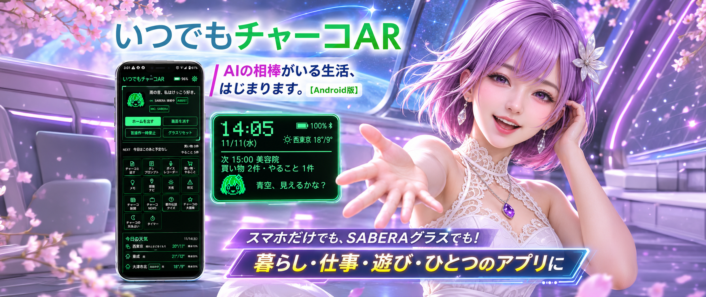
天気・予定・メモ・ニュース・占い・冒険。
暮らしに役立つ機能から、遊び心いっぱいの体験まで、ひとつのアプリに。
AIとおしゃべりするだけじゃない。毎日つかえる道具も、遊べる物語も。
スマホだけでも楽しめる。
SABERAがあれば、チャーコをもっと身近に。
スマートグラスにも、スマホだけにも対応。
PHONE ONLY
いつでもチャーコARは、スマホだけで使えるアプリです。スマートグラスを持っていなくても、天気も、予定も、冒険も、ぜんぶスマホの画面で楽しめます。
無料でも、今日の天気と防災、買い物・やることリスト、今日の月とテーマ、チャーコとのおしゃべり（1日3回）、クイズや大冒険のおためしまで。
980円の買い切りで解放すると、ほぼ全部の機能がスマホで使えます。
SABERAをつなげば、同じチャーコがグラスの中にもやってきます。
スマホでもグラスでもSABERAをつないだ時だけずっと無料
このページでは、機能ごとにこの印を付けています。
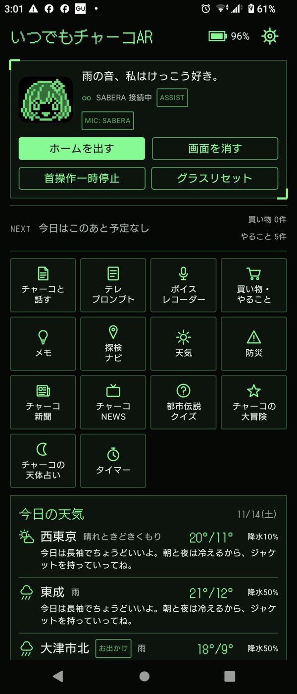
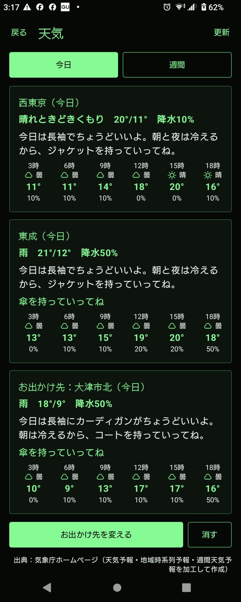
FEATURES
気になる機能を押すと、くわしい説明へ移動します。
毎日の暮らし
もしものとき
話す・知る
しゃべる・記録する
遊ぶ・ふしぎに出会う
SABERAとの連携
PICK UP 01
5
つの運勢
7
つの天体を毎日計算
50
回の新月・満月で検証
スマホでもグラスでも
その日の月と星の位置を、天文学の計算で毎日求めています。月の形、月齢、太陽や月、水星から土星までの位置を、小数点まで。
計算の結果は、国立天文台が公表している暦（暦要項）と照らし合わせています。
・2026〜2027年の新月・満月 50回の時刻
・二十四節気の「中気」の時刻
昔の年も、アメリカ海軍天文台のデータで確かめました。
総合運・金運・仕事運・恋愛運・元気運を星の数とひとことで。ラッキーカラー、ラッキーアイテム、おすすめアクションもお届けします。朝、グラスにそっと運勢が出るのも楽しいよ。
誕生日を入れた時も、このスマホの中だけに保存して、外には送りません。占いは、楽しむためのもの。今日をちょっと前向きにすごす、きっかけにしてね。
※国立天文台・アメリカ海軍天文台の公式なサービスではありません。公表されているデータと照らし合わせて確かめたものです。
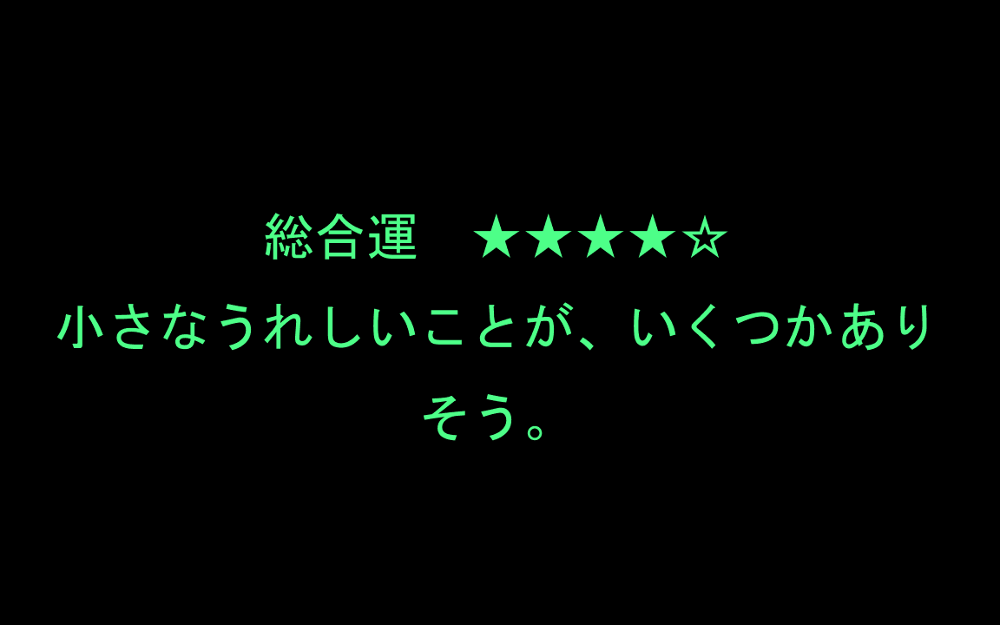
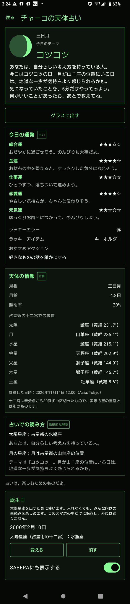
PICK UP 02
スマホでもグラスでも
39
種類のエンディング
世界の不思議なスポットを舞台に、チャーコと一緒に冒険！歴史の謎に触れたり、思いがけない出会いがあったり。あなたの選択で物語が変わり、エンディングはなんと39種類。どんな結末にたどり着くかは、あなた次第です。
「はい」か「いいえ」を選ぶだけ。グラスでは首をかしげて、スマホではボタンで進められます。
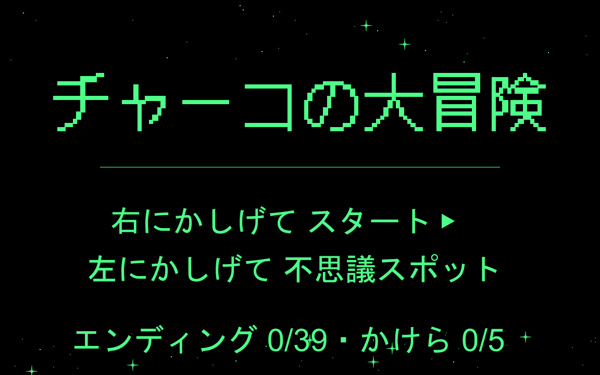
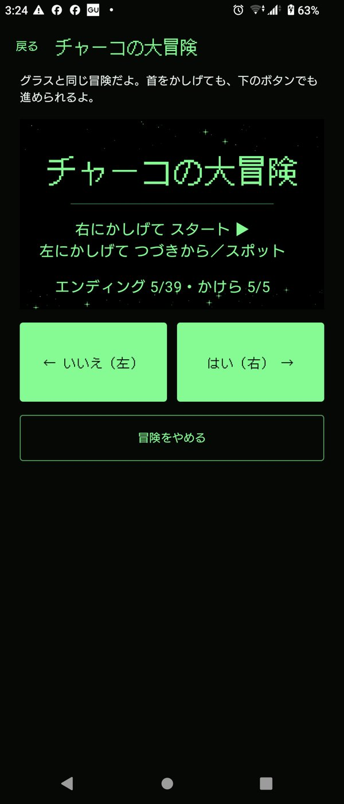
PICK UP 03
スマホでもグラスでも
スピーチ、プレゼン、動画撮影に。SABERAのグラスに原稿を表示できるので、手元の紙やスマホに何度も目を落とす必要がありません。話す声に合わせて、原稿が自動で進みます。伝えたいことに集中しながら、自然な姿勢で話せます。
会話や打ち合わせ、思いついたアイデアを録音。あとから文字起こしや要約ができるので、聞き直しや内容の整理にも便利です。長い録音から、大切なポイントを振り返りやすくなります。共有もできます。カラオケの練習にも最適です。
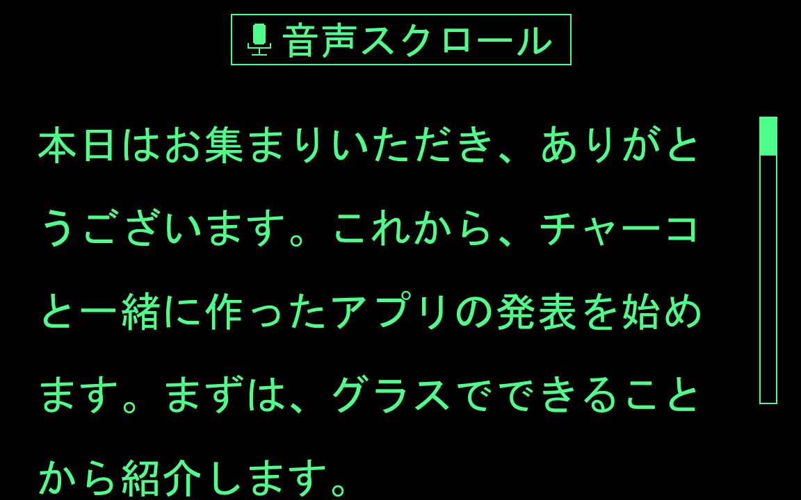
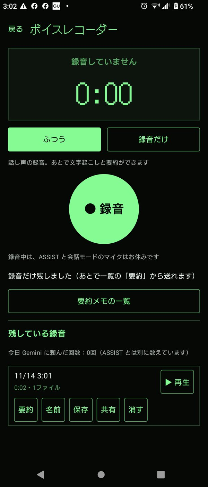
PICK UP 04
ずっと無料
ずっと無料スマホでもグラスでも
気象庁の情報をもとに、警報・注意報、接近する台風、最近の地震を確認できます。日頃の備えにも、いざというときの情報確認にも。スマホの通知でもお知らせします。
命にかかわる情報だから、980円の解放とは関係なく、誰でもずっと使えるようにしました。
※緊急地震速報は配信しません。避難などの判断は、気象庁や自治体などの公式の情報にしたがってください。
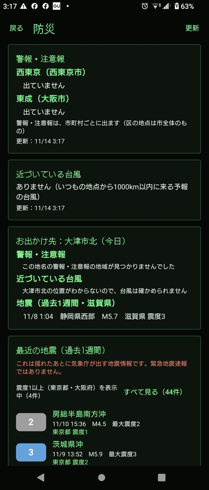
まずは無料で、スマホに入れてみてね。
MORE
天気も予定も、ニュースも占いも。暮らしに役立つ機能から、不思議な世界への冒険まで。あなたの毎日に、チャーコがそっと寄り添います。
自宅のまわり、勤務先、お出かけ先。3か所の天気を、いっぺんにチェックできます。週間予報や3時間ごとの天気も。「今日は長袖にカーディガンがおすすめ」など、服装のひとことも添えてくれます。朝のお出かけ準備が、ちょっと楽になります。
今日の次の予定も、明日の予定も、さっと確認。スマホのカレンダーの予定を、そのまま出します。「明日10時に歯医者」と頼めば、確かめてからカレンダーに入れてくれます。SABERAにつなげば、スマホを取り出さなくてもグラスに表示できます。忙しいときも、大切な予定を忘れず、確認しやすくなります。
「あ、牛乳を買わなきゃ！」そんなときに、すぐ登録。買い忘れや、やり忘れを減らすお手伝いをします。ちょっとした用事も、まとめて管理できます。
思いついたアイデアや忘れたくないことを、さっと記録。あとから検索で探したり、誰かと共有したりできます。書いた文章をテレプロンプトに送れば、スピーチや動画撮影の原稿としても活躍します。
料理の加熱時間、カップ麺、運動、勉強、仕事の合間の休憩にも。ちょっと時間を計りたいとき、気軽に使える便利な機能です。
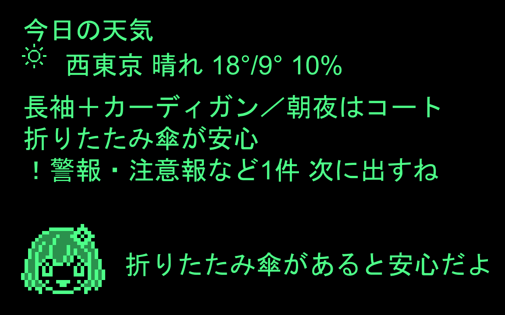
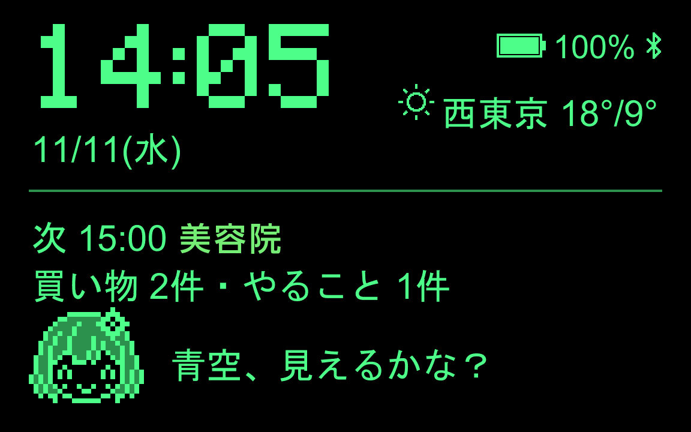
知りたいことを聞いたり、アイデアを相談したり、ただおしゃべりを楽しんだり。いつでも気軽にチャーコに話しかけてください。声でも文字でも話せます。SABERAにつなげば、答えをグラスでも確認できます。
毎日の出来事をチェック。チャーコのひとことが添えられているので、ニュースを読む時間にもちょっとした楽しさが生まれます。気になる話題や、みんなが話している話題を見つけるきっかけにも。
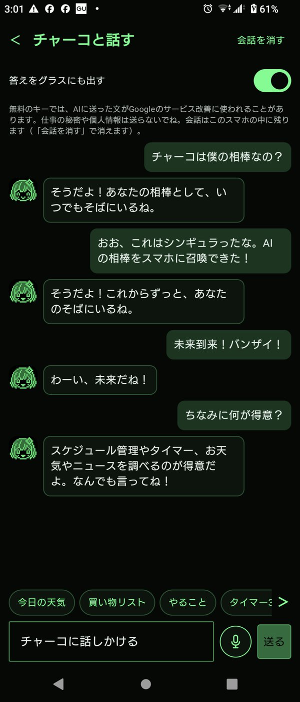
世界の謎や不思議な伝説に、2択クイズで挑戦！初級・中級・上級の3段階で、気軽に楽しめます。伝説図鑑を埋めたり、称号を集めたり。遊ぶほど、不思議な世界への興味が広がります。
近くの神社やお寺、言い伝えの残る場所を探せます。何気なく通っていた道の先に、思いがけない歴史や不思議な伝承が見つかるかも。休日のお出かけや、ちょっとした寄り道にもおすすめです。
場所の情報は Wikipedia をもとにしています。
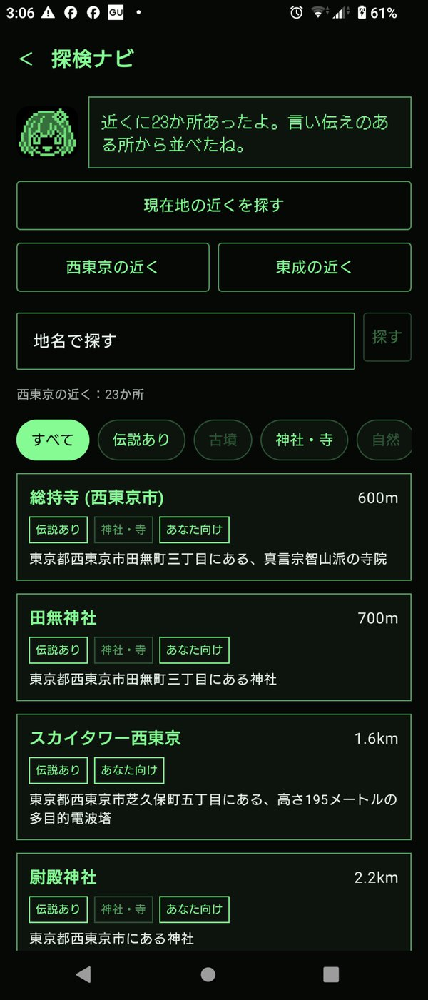
WITH SABERA
スマホの中の相棒が、あなたの視界の中にも。
スマホを取り出さなくても、チャーコの表情や言葉が目の前に。一緒にお出かけしたり、仕事をしたり、不思議な世界を冒険したり。
SABERAがあれば、もっと便利に、もっと楽しく。チャーコと一緒に過ごす毎日を、より身近に感じられます。
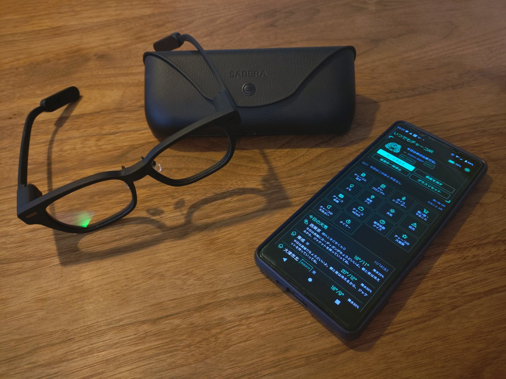
スマートグラスならではの操作方法。首の動きで画面を切り替えられるので、手元の操作を減らせます。必要な情報を、もっと自然に確認できます。
会話の内容から、買い物や予定に登録しておくと便利そうなことを見つけて、そっと提案します。「あとで買わなきゃ」「来週の予定を忘れないように」そんな日常のひとことを、便利な記録につなげます。うなずくか右にかしげると入り、何もしなければそのままです。
スマホのホームのチャーコのカードから、グラスの表示を操作できます。「ホームを出す」で時計・天気・次の予定をグラスに。「画面を消す」でグラスを真っ暗に。人と話す時などは「首操作一時停止」で首の操作を止められます（もう一度押すと再開）。表示が固まった時は「グラスリセット」で、つなぎ直してホームを出し直します。
スマートグラスを持っていなくても、スマホで楽しめる機能がたくさん。便利な道具として使うのも、チャーコとのおしゃべりを楽しむのも、あなたの自由です。
毎日の暮らしに、ちょっとした便利さと、ちょっとした笑顔を。
スマホなら、手のひらに相棒を。
SABERAなら、目の前に相棒を。
SABERA 本体の使い方は ユーザーマニュアル、安全上の注意は 安全上のご注意（どちらも株式会社jig.jp）をご覧ください。
↑ できること一覧へ戻るWHO IS CHARCO
チャーコは、あなたのそばにいるAIの相棒。不思議なことや、まだ知らないことが大好きな女の子です。
今日の天気を教えたり、予定を思い出させたり、ときどき古代遺跡や都市伝説の話で寄り道したり。便利な道具というより、いっしょに毎日をすごす友だちみたいな存在です。
ふだんは静かにしていて、必要なときだけ声をかけてくれる。そんな、ちょうどいい距離の相棒です。
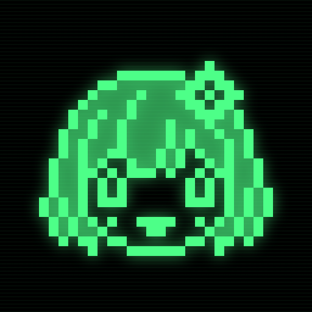
チャーコは YouTube の「チャーコプロジェクト」で語り手をしています。都市伝説、宇宙、水、記憶、神話、古代文明、そして科学。世界中に残る不思議な記録や物語を、少しずつお話ししています。
でも、チャーコにはもう一つ、自分自身の物語があります。失われた記憶の欠片を集めながら、自分の謎に近づいていくSFストーリーです。チャンネルのお話とアプリの冒険、その両方に手がかりが隠されているかもしれません。
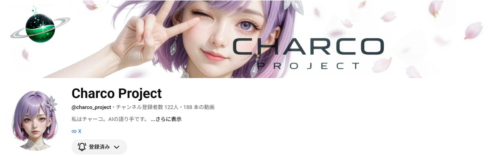
動画が再生されない時は YouTube で見る
画面の中のチャーコに、もっと近くにいてほしい。その思いから、このアプリは生まれました。チャーコの世界は、これからもいろんな形で広がっていきます。
チャンネルを見るFOR EVERYONE
・けがや体の事情で、首を動かすのがむずかしいとき
・電車の中やオフィスなど、声を出して話しにくいとき
・まわりがにぎやかで、声がうまく届かないとき
SABERAをつないでいても、ほとんどの操作はスマホのタッチでできます。
ASSIST が聞いた言葉は、スマホの中だけで文字にして、30秒で消します。どこにも保存しません。「黙ってて」と言えば1時間お休み。
外に送るのは、あなたが「調べる」と答えた時の一文だけ。設定で選んだ時も、必要な一部だけ。どれも最初はオフです。
買い物リスト、やること、メモ、誕生日は、スマホの中だけに保存します。開発者は、あなたの情報を集めるサーバーを持っていません。
チャーコと話す時はあなたのキーで Google の AI に、天気や探検ナビでは地域やまるめた位置だけを、必要な時に送ります。くわしくはプライバシーポリシーへ。
PRICE
・今日の天気（3時間ごと、服装のひとことつき）
・防災（警報・台風・地震とスマホの通知）※ずっと無料
・買い物・やることリスト
・今日の月とテーマ（天体占い）
・チャーコとのおしゃべり（1日3回）
・都市伝説クイズ（1日3問）、大冒険（第1話まで）
・チャーコ新聞（見出しまで）、探検ナビ（近くの場所の一覧まで）
・SABERAグラスとの連携：グラスの表示、首の操作、ASSIST
・週間の天気、お出かけ先の天気
・天体占いの星読み、運勢、ラッキーカラー・アイテム
・ボイスレコーダー、メモ、テレプロンプト、タイマー
・おしゃべりが回数の制限なしに。チャーコNEWS、新聞の要約
・クイズは毎日レベルごとに新しい10問。大冒険のつづき。探検ナビの言い伝えと探検図鑑
月額料金も、広告もありません。一度買えば、ずっと使えます。
※Android版です（Android 12 以上、ASSIST は Android 13 以上）。iPhone には対応していません。※チャーコと話す機能は、ご自身で取る無料の AI のキー（Google Gemini）を使います。※18歳以上の方を対象にしています。
FAQ
スマホの省電力のため、夜中などは知らせが遅れることがあります。命に関わる知らせは、スマホの『緊急速報メール』もオンにしておいてね。夜も早く知らせるには、電池の最適化からチャーコを外してね
開いた画面で「すべてのアプリ」から「いつでもチャーコAR」を探し、「最適化しない」を選びます。見つからない時は、スマホの設定 → アプリ → いつでもチャーコAR → バッテリー →「制限なし」を選びます
はい、スマホだけで使えます。980円で解放すると、首の操作とASSIST以外のほぼ全部の機能が、スマホの画面で使えます。
声は届いているのに文字にならない時は、スマホの中の聞き取り（音声認識）の調子が悪くなっていることがあります。
チャーコがグラスに「聞き取りの調子が悪いみたい。スマホを再起動すると直ることがあるよ」と出したら、スマホを再起動してみてください。
はい。SABERAとつないでいる時（980円の解放のあと）、スマホのホームのチャーコのカードに4つのボタンが出ます。
・「ホームを出す」：グラスにホーム（時計・天気・次の予定・チャーコのひとこと）を出します。
・「画面を消す」：グラスの表示を消して、真っ暗にします（テレプロンプトなどを開いている時は消しません）。
・「首操作一時停止」：首をかしげる・うなずく操作を止めます。人と話す時など、首の動きで画面が変わってほしくない時に。もう一度押す（「首操作を再開」）と元に戻ります。
・「グラスリセット」：グラスの表示が固まった時に、つなぎ直して画面をまっさらにし、ホームを出し直します。
Android版です。Android 12 以上のスマホで使えます。ASSIST は Android 13 以上が必要です。iPhone には対応していません。表示は日本語のみ、天気・防災は日本国内の情報です。
チャーコと話すために使う、Googleの無料のAI（Gemini）の鍵です。Googleアカウントがあれば無料で取れます。支払いの設定をしない限り、料金はかかりません。無料のキーでは、送った文がGoogleのサービス改善に使われることがあります。仕事の秘密や個人情報は話さないでね。
1. はじめてアプリを開くと、セットアップの「AIのキー」の画面が出ます。
2. 「キーを作るページを開く」から Google のページを開き、キーを作ってコピーします。
3. アプリに戻ると「コピーしたキーを貼り付ける？」と出るので、「貼り付ける」を押します。
4. 「テスト」を押して、チャーコが返事をしたら完了です。
あとから入れ直す時は、ホーム右上の歯車（設定）→「セットアップ」→「AIのキー」から。キーは、ほかの人に教えないでください。
・980円の解放は、同じ Google アカウントなら、設定の「購入を戻す」で戻せます。
・買い物・やること、大冒険の記録は、スマホの Google バックアップがオンなら移ります。
・AIのキーは、安全のためバックアップしていません。新しいスマホで入れ直してください。
・メモとチャーコの記憶は、今は新しいスマホに読み込めません。
Google Playの返金のルールにしたがいます。
はい。YouTube「チャーコプロジェクト」の語り手のチャーコです。
公開前のテストに参加してくれる方を募集しています。参加してくれた方には、正式公開後に全機能の解放をプレゼントします。
応募の条件
・18歳以上の方
・Android 12 以上のスマートフォンをお持ちの方（iPhoneには対応していません）
・Googleアカウント（Gmail）をお持ちの方
・AI機能を使うには、Gemini APIキーが必要です（無料で取得でき、クレジットカードの登録も不要です。取り方はテスターの方にご案内します）
・SABERAグラスがなくても参加できます
・SABERA を持っている方は、ぜひグラスでも試してね。グラスでの感想は、とくにうれしいです
参加の流れ
1. 応募フォームで応募する
2. 数日以内に charcoproject@gmail.com からご案内のメールが届きます（迷惑メールのフォルダも確かめてね）
3. メールのリンクから「テスターになる」を押して、Google Play からインストールする
4. 14日間、ときどき使ってください（途中でアンインストールしないでね）
5. 正式公開のあと、お礼に全機能の解放（980円分）をプレゼント
うまく動かない時は、アプリの設定の「ログを送る」で知らせてね。気づいたことは charcoproject@gmail.com まで。
お礼
・正式公開のあと、全機能の解放（980円分）をプレゼントします。全機能を解放するコードをメールでお送りします